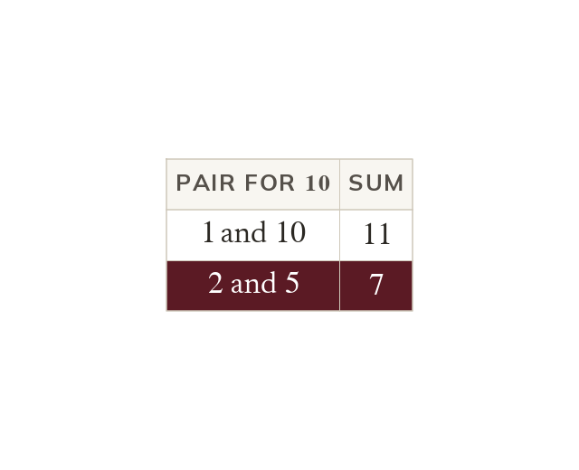
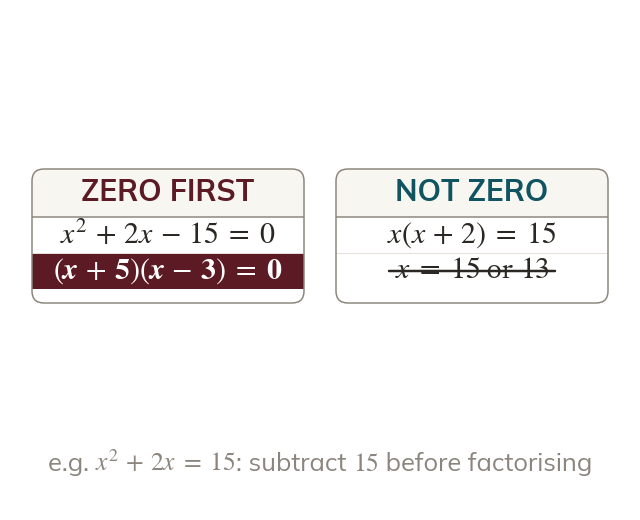

Factorise, then use the zero
A quadratic equal to zero is factorised first. Each bracket then gives one solution.
A quadratic equal to zero is factorised into two brackets first. Each bracket is then set to zero, giving the two solutions.
Most quadratic equations do not arrive in brackets. Factorising puts them there, and the zero-product principle finishes the job.
Work down the page at your own pace. Write every answer in your book first, then click to check it.
Read each card, then follow the worked examples one step at a time.
A quadratic equal to zero is factorised first. Each bracket then gives one solution.

The bracket numbers add to b and multiply to c. Listing the factor pairs of c finds them.
Pick an answer. If it's wrong, the feedback tells you which mistake it was.
Read each card, then follow the worked examples one step at a time.

The zero-product rule needs zero on one side. So every term is collected on one side first.
Dividing both sides by loses the solution
Taking out as a factor keeps it.
Pick an answer. If it's wrong, the feedback tells you which mistake it was.
Finished? Next lesson: 10H.9.3 Solving Non-Monic Quadratics.
Log in, then search for a code to practise that skill.
Videos, worksheets and more on each part of this lesson.